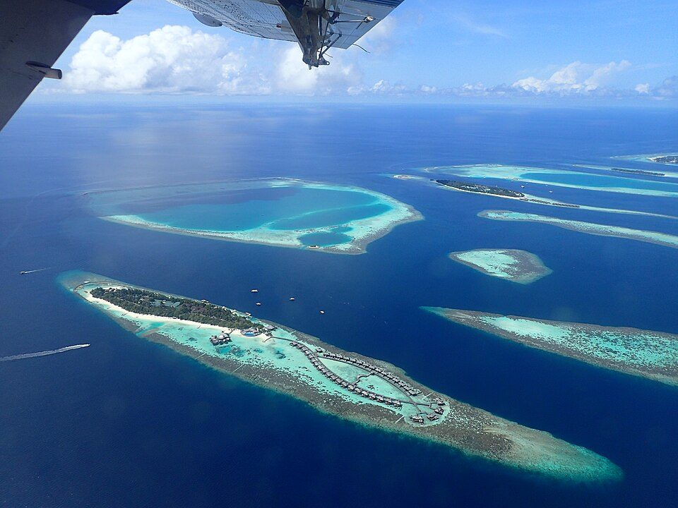

Planeta Tierra · 6 fichas
Geografía del mundo
Continentes, montañas, desiertos, islas y polos: los grandes paisajes del planeta y la asombrosa variedad de España.
La superficie de la Tierra es un mosaico de paisajes: cordilleras que crecen todavía, desiertos donde no ha llovido en siglos, miles de islas y dos polos cubiertos de hielo. Esta sección recorre los grandes rasgos de su geografía, con una parada especial en España.
 Continentes y países¿Cinco, seis o siete continentes? Superficie, población y curiosidades de cada uno, y los países más grandes, más pequeños y más poblados.
Continentes y países¿Cinco, seis o siete continentes? Superficie, población y curiosidades de cada uno, y los países más grandes, más pequeños y más poblados. Montañas y cordillerasDel Everest a los Andes: cómo nacen las montañas, las cumbres más altas de cada continente y por qué el Himalaya sigue creciendo.
Montañas y cordillerasDel Everest a los Andes: cómo nacen las montañas, las cumbres más altas de cada continente y por qué el Himalaya sigue creciendo. DesiertosArena, sal y hielo: el Sahara, el Atacama, el salar de Uyuni y por qué la Antártida es el mayor desierto del planeta.
DesiertosArena, sal y hielo: el Sahara, el Atacama, el salar de Uyuni y por qué la Antártida es el mayor desierto del planeta.
Islas y costasGroenlandia, las Galápagos, las Maldivas y las Canarias: cómo nacen las islas, las más grandes y las más raras del planeta. Los polosLa Antártida y el Ártico: el continente helado, la carrera al Polo Sur, el sol de medianoche y un hielo que se está derritiendo.
Los polosLa Antártida y el Ártico: el continente helado, la carrera al Polo Sur, el sol de medianoche y un hielo que se está derritiendo. La geografía de EspañaUn país de montañas, mesetas, volcanes y dos mares: el relieve, los ríos, los climas y los paisajes más asombrosos de España.
La geografía de EspañaUn país de montañas, mesetas, volcanes y dos mares: el relieve, los ríos, los climas y los paisajes más asombrosos de España.